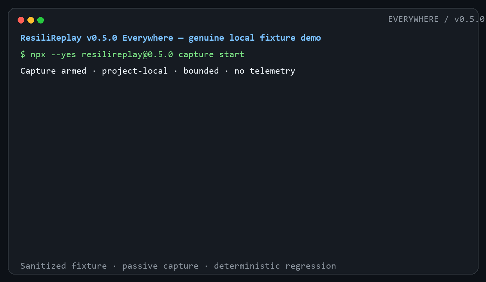

MCP INSPECTOR
Explore and debug
Inspect server capabilities, schemas, and behavior interactively.
v0.5.0 · Everywhere · local-first
Turn a supported coding-agent tool failure into sanitized, deterministic, executable regression evidence.
Three entry points
Node.js 22 or 24. Previewing writes nothing and starts no process.
npx --yes resilireplay@0.5.0 demo
npx --yes resilireplay@0.5.0 connect --agent auto --dry-run
npx --yes resilireplay@0.5.0 mcp serveGenuine local fixture output
A real Node command exits 7, the passive Codex-shaped hook becomes bounded process-exit evidence, capture stops, and the generated Node regression passes. The original command is never retried.

Different jobs
MCP INSPECTOR
Inspect server capabilities, schemas, and behavior interactively.
EVAL / OBSERVABILITY
Evaluate quality, safety properties, traces, or model behavior.
RESILIREPLAY
Preserve a bounded failure boundary and execute its deterministic regression in CI.
Functions overlap at the edges. Compatibility names are factual and imply no endorsement.
Five-minute path
resilireplay connect --agent codex --dry-run shows file operations and
hashes with no writes.
Confirm the smallest config merge and recoverable backup. Capture remains off.
resilireplay capture start enables bounded metadata-only observation
for this repository.
The agent emits a stable result hook. No retry, fault injection, transcript scraping, or permission expansion occurs.
Inspect the evidence ID, stop capture, then generate an exclusive-create executable regression.
Honest compatibility
CLAUDE CODE
Official validation, isolated marketplace install, installed stable-hook capture, passing regression.
CODEX
Isolated repo marketplace install, documented result classification, passing regression.
HERMES
Portable skill discovered and nine stdio MCP tools connected; no model flow claimed.
Read the complete matrix, including documented-only and unsupported surfaces.
Safety boundary
No raw prompts, transcripts, tokens, environment values, unrestricted bodies, personal paths, telemetry, or uploads.
20,000 events, 32 KiB each, locked writers, exact dedupe, atomic state, interrupted-tail repair, and config rollback.
Exact evidence/campaign hashes gate writes and execution. Hooks never retry or inject failure.
Commands run with your OS authority and are not sandboxed. Security policy · limitations